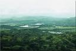
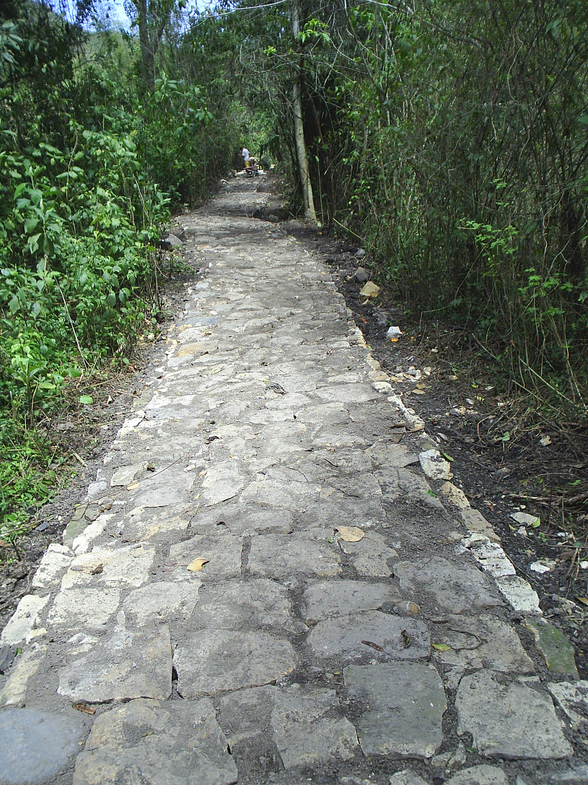

LOCALIZACION GEOGRAFICA
| NUMERO | NOMBRE |
|
1
2 3 4 5 6 7 |
Beltran
Bituima Chaguani Guayabal de Siquima Puli San Juan de Rio Seco (capital) Viani |
|   |
"Sitios de Interes Provincia de Magdalena Centro"
Tabla No. 1: Lista de Municipios
El Magdalena Centro de Cundinamarca tierra cordial y amable de gente altruista con hermosos paisajes esta integrada por los municipios de Guayabal de Siquima, Bituima, Viani, San Juan de Rioseco, Puli, Beltran y Chaguani.
Caracteristica de la región es su producción agricola destacandose principalmente el cultivo de café y cultivos transitorios como maiz, tomate y habichuela entre otros; se produce igualmente panela y banano. La ganaderia y las especies menores tambien hacen parte de su economia.
Bituima se conoce como el municipio remanso de paz, Viani el municipio modelo y musical, Puli el municipio paisaje, Guayabal puerta de oro del Magdalena Centro, Beltran brisas del magdalena, Chaguani tierra de cupido y San Juan de Rioseco su capital el municipio Alegre de Colombia.
|
|

"Municipios de la Provincia de Magdalena Centro"

|

|